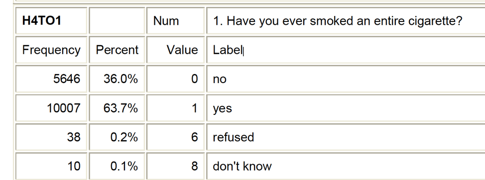

Data Architecture
2024-08-26
Prior Knowledge
Shared experiences
Answer each of the following questions
Answer directly in the Google Docs Data Architecture collaborative notes. Put your name next to your answer.
❓ What is data?
❓ In what manner/forms are data found?
❓ How and where do you store data?
❓ What do we use data for?
Working with data in Spreadsheets
Shared experiences
❓ What kind of tasks do you do in spreadsheets?
❓ Which tasks do you think spreadsheets are good for?
❓ Spreadsheet frustrations (Pain points) What have you accidentally done in spreadsheet that made you frustrated or sad?
Formatting data in spreadsheets
- Humans use spreadsheets differently than computers
- What do you want to do with the data is important to consider during setup
- You can set things up in different ways in spreadsheets, but some of these choices can limit your ability to work with the data in other programs
Good data handling practices
- ❌ Leave raw data alone
- Minimize the amount of tidying you do to the data outside of a script.
- If you have to make an adjustment, write down exactly what you did in a notes file.
- Export the cleaned data to a text based format like CSV (comma separated values)
- Leave missing data cells blank: don’t put a
., ormissing, or 0, or NULL
Tidy Data principles
- Put all variables in columns - this is the thing that you’re measuring (weight, temp, address)
- One observation per row
- Don’t combine multiple pieces of information in once cell.
- pct_5_10_F : percent of females between 5 & 10 years old in that county
Tip
Corresponding read: Tidy data principles by Hadley Wickham.
Example - livestock data
Consider a study of agricultural practices among farmers in two countries in eastern sub-Saharan Africa (Mozambique and Tanzania). Researchers conducted interviews with farmers in these countries to collect data on household statistics (e.g. number of household members, number of meals eaten per day, availability of water), farming practices (e.g. water usage), and assets (e.g. number of farm plots, number of livestock). They also recorded the dates and locations of each interview.
Data for humans
If they were to keep track of the data like this:

❓ What are some of the problems with this? (Work with your neighbor and answer this in Google Docs)
❓ What is actually being measured?
What would this data look like in a tidy data format?

- One row per observation (farmer)
- One topic per column (animal)
- Cell value is a count of the unique combination between animal type and farmer.
Metadata
Metadata
- Recording data about your data (“metadata”“) is essential.
- Think about yourself. You may know now, but the chances that you will still remember the exact wording of the question you asked about your informants’ water use (the data recorded in the column water use), for example, are slim.
- Think about others. Other people may want to examine or use your data - to understand your findings, to verify your findings, to review your submitted publication, to replicate your results, to design a similar study, or even to archive your data for access and re-use by others.
- Should not be contained in the data file itself.
- Made for humans, not computers.
- Often called codebooks or data dictionaries
Codebooks contain the following information
- variable name (for the computer)
- variable label (for the human)
- the prompt (e.g. survey text question)
- plausible values
- categorical value labels

Closing thoughts
Warning
Data without context is meaningless.
🔗 https://math615.netlify.app / Data Architecture